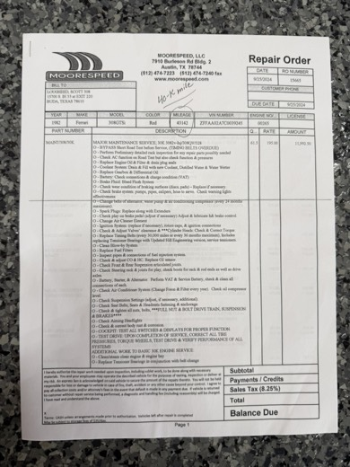
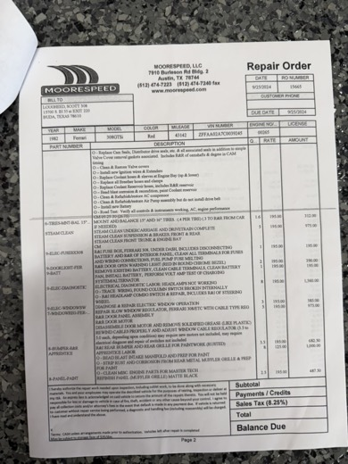
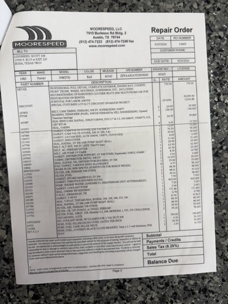

25 September 2024
$23,271.44
30,000-mile major service, Moorespeed, Austin
- Odometer
- 43,142 mi
- Repair Order
- No. 15665
- Labour Rate
- $195 per hour
- Account
- S. Lougheed


Page 1 of 4
RO 15665 · Scope of service
30K major service schedule; timing belts overdue


Page 2 of 4
RO 15665 · Additional labour
Electrical, windows, bumper, paint, detail


Page 3 of 4
RO 15665 · Parts
Belts, Hill tensioners, seals, water pump

Page 4 of 4
RO 15665 · Parts and totals
Hoses, fluids, tyres, sublet paint; $23,271.44
Annotated by hand on page 1: “40-K mile”, with the odometer reading circled. Moorespeed LLC, 7910 Burleson Road, Building 2, Austin, Texas · (512) 474-7223.
Labour
| Operation | Hours | Amount | Particulars |
|---|---|---|---|
| 30,000-mile major service308QV / 328 two-valve schedule | 61.5 | $11,992.50 | Cam belts renewed (found overdue; road test deferred) with Hill Engineering uprated tensioner bearings. Camshafts removed and refitted, timing degreed; cam, distributor-drive and all associated seals renewed. Valve clearances set (eight shims), heads re-torqued. Plugs, extenders, leads, cap and rotor. Fuel filters, CO and HC set, oxygen sensor. Engine, gearbox and differential oils. Coolant flush. Brake fluid. Every coolant hose and sleeve, breather and reservoir hose. Cam covers restored, intake manifold bead-blasted. Air-conditioning compressor and air pump refurbished; air-pump belt not refitted. New battery. Complete nut-and-bolt torque check. |
| Tyres | 1.6 | $312.00 | Four Michelin TRX 220/55 VR390 mounted and balanced |
| Steam cleaning | 5.0 | $975.00 | Underside, drivetrain, suspension, brakes, front compartment |
| Fuse box | 1.0 | $195.00 | Removed and all terminals cleaned; fuel-pump fuse had been overheating |
| Door warning lamps | 2.0 | $390.00 | Renewed; red lens, round chrome bezel |
| Battery | 1.0 | $195.00 | Cables and tray cleaned, battery fitted, charging system tested |
| Electrical diagnosis | 8.0 | $1,560.00 | Headlamps inoperative; column combination switch failed internally. Wheel removed, switch repaired. |
| Window operation | 8.0 | $1,560.00 | Motor dismantled and hardened grease removed; cable regulator rewound and adjusted. Motors retained. Invoice advises they may yet require replacement. |
| Rear bumper and grille | 14.0 | $2,170.00 | Removed, corrosion stripped, grille refinished satin black Includes eight apprentice hours at $125. |
| Detailing | — | $750.00 | Full detail; seats removed, leather reconditioned |
| Labour | $20,099.50 | Less 25% client discount of $5,024.88; net $15,074.62 |
Account
| Item | Amount | Particulars |
|---|---|---|
| Labour, net | $15,074.62 | |
| Parts | $5,264.90 | Principal items: TRX tyres $1,740; new factory Ferrari water pump assembly $605; Hill tensioners $196; Gates coolant hose kit $195; thermostat $172. The price column on page 3 is printed one line out of register with its descriptions; prices are matched here by quantity. The water pump reads $605 either way. |
| Paintwork | $1,000.00 | Sublet to J. Spaulding, Lago Vista. Bonnet, doors, front wings, roof, rear panel, nose. |
| Transport to painter | $975.00 | Five hours |
| Enclosed recovery | $333.65 | Delivered to Moorespeed by flatbed |
| Sundries | $181.53 | Shop supplies, disposal, freight |
| Subtotal | $22,829.70 | |
| Sales tax, 8.25% | $441.74 | Parts only |
| Total | $23,271.44 | Shown as balance due on this copy |
Components & Fluids
- Belts
- Cam belts, pair · alternator and water pump, 7M × 975 · air conditioning · air pump
- Seals
- Cam seals, four · cam-cover gaskets, both banks · left cam end cover · distributor support and drive · intake manifold · throttle housing · water pump and O-ring · thermostat · air-pump shaft
- Ignition & filters
- NGK BPR7ES, eight (in place of Bosch WR5DC) · air filters, two · oil filters, two · fuel filter · valve shims, eight
- Cooling
- New factory Ferrari water pump assembly · thermostat · Gates two-valve hose kit · all coolant and reservoir hoses
- Fuel
- Cloth-braided hose in 7, 9 and 14 mm; 18 and 22 mm stainless-braided · low-pressure line · stainless clamps · filler neck hose
- Fluids
- Mobil 1 15W-50, nine quarts · Mobil 1 75W-90, four litres · Pakelo 404 brake fluid · coolant with Red Line WaterWetter · BG CF5 · R-12, two